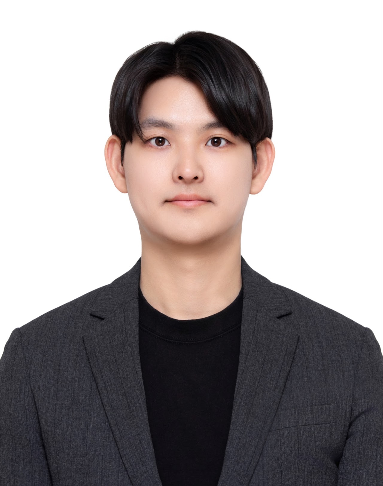

PRINCIPAL INVESTIGATOR
오성욱Seongwoog Oh
Seongwoog Oh오성욱
서울시립대학교 전자전기컴퓨터공학부 조교수Assistant Professor, School of Electrical and Computer Engineering, University of Seoul
ohseongwoog@uos.ac.kr
정보기술관 511호Information Technology Building, Room 511